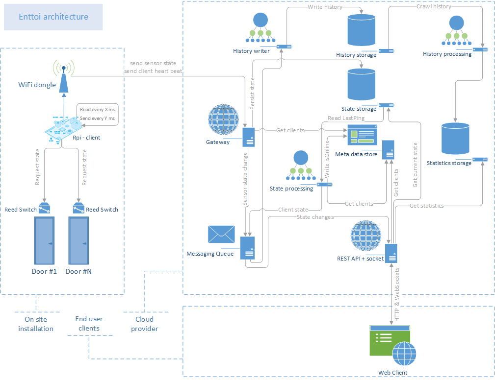

Overview
Enttoi is system that collects sensors data, push them to centralized place, which allows to see their state in real-time and gather statistics.
There is a blog post that goes into details of the project here.
Her is a high level architecture of the system: 
{kind=link}
Above building blocks mapped to repositories with their source code:
- Rpi client or Arduino client-server, or any other that capable to send sensors state to HTTP endpoint.
- Gateway - endpoint for all clients/sensors; receives their states, figures out whether it was changed and based on it persist it and sends notification to MQ.
- State processing - background job to monitor availbility of clients. If a client didn't report state or keep alive during some period it will notify that the client went offline.
- History writer - monitors queues and writes all changes to state of clients and sensors.
- History processing - converts historical data to queryable statistics data.
- API - expose meta data, states data and statistics via REST and websocket.
- Web client - exposes API's data via web interface.
Data Modeling
The data resides into two storage types:
-
Storage tables - store raw data as it received from sensors.
SensorsHistory Field [Structure]/Type/"Value" Partition Key [ClientId]_[SensorType]_[SensorId] Row Key Timestamp in Unix format ClientId String (Guid) SensorType String SensorId Int32 State Int32 TimeStamp DateTime SensorsState Field [Structure]/Type/"Value" Partition Key [ClientID] Row Key [SensorType]_[SensorID] ClientId String (Guid) SensorType String SensorId Int32 State Int32 TimeStamp DateTime PreviousState Int32 PreviousStateDurationMs Int32 ClientState Field [Structure]/Type/"Value" Partition Key [SensorId] Row Key "LastPing" ClientId String TimeStamp DateTime -
Storage queues - notifies on changes to states.
sensor-state-changed Property Type clientId String (Guid) sensorType String sensorId String newState String previousState String previousStateDurationMs Number timestamp DateTime client-state-changed Property Type clientId String (Guid) newState Boolean previousStateDurationMs Number timestamp DateTime -
DocumentDB - configurations and processed state of clients and sensors
ClientsCollection Property Type id String (Guid) isDisabled Boolean token String tags Array of string isOnline Boolean isOnlineChanged DateTime Sensors Array of sensorType String sensorId Int32
Authors and Contributors
All contributers and authors can be found here.